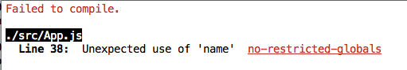

This lab introduces the create-react-app (CRA) tool for scaffolding and developing React apps.
While Storybook is a tool for developing individual components, the create-react-app tool is for application (app) development. For convenience, we will use the 'course modules' context again but add some small improvements.
In the terminal window, create a new folder (away from basicReactLab). Go to this new folder and type the commands:
$ npx create-react-app course-app
$ cd course-appThe first command scaffolded a React project, located in a new folder called course-app (see illustration).
It's actually a runnable app already. To prove it, type the command:
$ npm startThis command performs the following task sequence:
src folder. It starts with src/index.js and then follows the import statements to find other source file dependencies. Note, you will not see physical evidence of the transpiled files on the filesystem. This will only occur at the production stage (covered later).public/index.html, followed by relevant assets (transpiled JS, CSS etc).The server performs live reloading: watches all project source files for updates and re-transpiles and reloads the app in the browser when changes occur.
The browser should now be displaying the default React app:
We will mold this skeleton app into our simple custom app. The desired user interface we want is as follows:
The app's component hierarchy design will be as follows:
App (default)
|
|
V
Course
|
| (multiple)
V
ModuleThe App component renders a child called Course. Course renders many instances of a Module component. To achieve this, first create a sub-folder of src called components.
Create a new file src/components/module.js and paste in the following code:
import React , { Component } from 'react';
export default class Module extends Component {
render() {
return (
<tr>
<td>{this.props.description.name}</td>
<td>{this.props.description.noLectures}</td>
<td>{this.props.description.noPracticals}</td>
</tr>
);
}
}Create a second file src/components/course.js and paste in the following:
import React , { Component } from 'react';
import Module from './module'
export default class Course extends Component {
render() {
let list = this.props.modules.map(
(module, index) => <Module key={index} description={module} />
);
return (
<div>
<h1>{`${this.props.title} modules table`} </h1>
<table className="table table-bordered">
<thead>
<tr>
<th>Name</th>
<th>No lectures</th>
<th>No practicals</th>
</tr>
</thead>
<tbody >
{list}
</tbody >
</table>
</div>
);
}
}Download this WIT logo image and move it to the src folder.
From the course-app folder commit this work:
$ git add -A
$ git commit -m "Components completed"In src/App.js, replace the entire content with the following:
import React, { Component } from "react";
import Course from "./components/course";
import "./App.css";
import witCrest from "./wit_crest.png";
class App extends Component {
render() {
const modules = [
{
name: "Web Dev",
noLectures: 1,
noPracticals: 2
},
{
name: "Programming",
noLectures: 2,
noPracticals: 3
},
{
name: "Database Systems",
noLectures: 2,
noPracticals: 2
},
{
name: "DevOps",
noLectures: 2,
noPracticals: 2
},
{
name: "Enterprise Web Dev",
noLectures: 2,
noPracticals: 3
}
];
let name = "HDip Computer Systems";
return (
<div>
<header className="App-header">
<img src={witCrest} alt="logo" />
</header>
<div className="course">
<Course title={name} modules={modules} />
</div>
</div>
);
}
}
export default App;Replace the content of src/App.css with the following:
.App-header {
background-color: lightblue;
height: 120px;
padding: 10px;
color: white;
}
.course {
padding: 10px;
}Assuming the server is still running (if not, start it with '$ npm start'), the browser should now be rendering the desired result, except for some styling issues (see below). You should now review all the above code changes to ensure you understand how the app produced it's UI.
From the course-app folder commit this work:
$ git add -A
$ git commit -m "App assembled"The styling problem is due to our omission of the Bootstrap CSS file. Stop the server and install it as follows:
$ npm install --save bootstrap@3.3.6
$ npm startThe traditional approach (which we won't use) to referencing CSS is by adding a link tag to index.html:
<link href="... path to CSS file ..." rel="stylesheet">A newer and more developer-friendly approach is to reference it directly from the JS code. In src/index.js add the following line (at the top):
import '../node_modules/bootstrap/dist/css/bootstrap.css';Also, remove these two unnecessary lines:
The app should now be rendering as planned.
From the course-app folder commit this work:
$ git add -A
$ git commit -m "Styled with Bootstrap"In src/index.js notice the statement:
ReactDOM.render(<App />, document.getElementById('root'));This attaches the App component (and its subordinates - Course and Modules) to the browser's DOM at the element with id 'root'. This element was declared by create-react-app in the body of public/index.html:
<div id="root"></div>The tool's development server treats public/index.html as a template. At runtime it:
src/index.js, into one JS asset. This includes your custom code, React and other third party libraries.index.html to reference that asset.During development mode their is no evidence of the merged JS on your filesystem. It only appears when in production mode.
Live reloading is a great aid when debugging. As a simple example, suppose we deliberately add an error to src/App.js by changing the line:
let name = "HDip Computer Systems";to:
let course_name = "HDip Computer Systems";On saving this change the tool re-transpiles the code and reports any errors to the terminal window:

Undo the change to fix the error.
The app is now complete but clearly the development server environment is not suitable for a public-facing or production app. Transpilation should not be happening dynamically and all file sizes should be minified, thus improving load-time performance. To build a production-ready app, stop the development server and type the command:
$ npm run buildThis creates a build folder to house the production-quality, static form of the app:
All the app's JS code is stored in ONE JS file and the content is minified. The file name is a computed hash value to aid browser caching operations.
To use the production version of the app we need a standard web server. If you already have one installed, start it from the course-app/build folder and view the app in the browser. Otherwise, install this simple HTTP server:
$ npm install -g httpserverand start it from the course-app/build folder, as follows:
$ httpserver -p 8080In the browser navigate to: http://localhost:8080.
Notice in the .gitignore file (generted by CRA) the /build folder is included - we never commit generatyed files to a repository.
{kind=link}